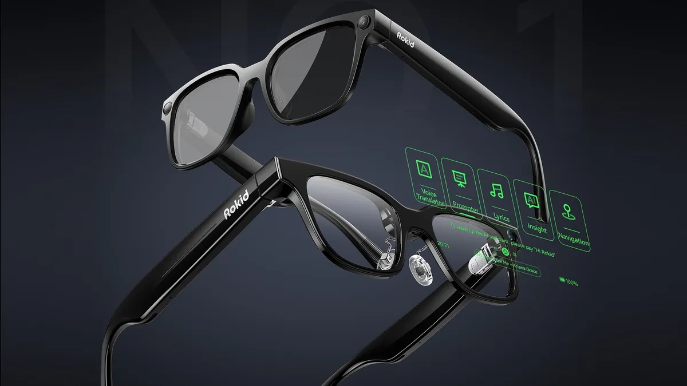

0から伴走
現場ヒアリングから入り、業務システムの設計段階から支援します。
Codellは、AIなどの最新技術を用いて、あなたの現場を変えるパートナーです。 現場の緻密なヒアリングから、最適な解決策をご提案します。
現場DXの実装を支えるCodellのチーム。

江田岬毅
CEO

相木絆煌
CTO
宮野柊太
COO

尾崎仁瑚
CDO
現場に寄り添い、設計から運用まで一気通貫で伴走します。
現場ヒアリングから入り、業務システムの設計段階から支援します。
AIやARなどの最新技術に精通。最適な手段を提案します。
システム実装後の運用・保守・改善まで伴走します。
ヒアリングから保守・改善まで、4ステップで現場DXを実装します。
利用シーン、課題、既存業務、導入体制を確認し、優先順位を合わせます。
デバイス、初期設定、説明内容、スケジュールを整理して提案します。
現場で使い始められる状態をつくり、必要に応じて機能を拡張します。
運用中の相談、トラブル対応、アップデートを継続して支援します。
Codellのこれまでの取り組みと認定。

Flagship Product
介護の「気づき」を共有するARグラス型情報支援システム。入居者の顔を見るだけで、個別のケア情報や注意点をリアルタイムに表示します。AR×AIで「今・誰に・何をすべきか」を即座に可視化し、新人教育の負担軽減と介護サービスの質向上を目指します。
「何から手を付ければよいか」「現場で続けられるか」など、検討の最初期からご相談ください。